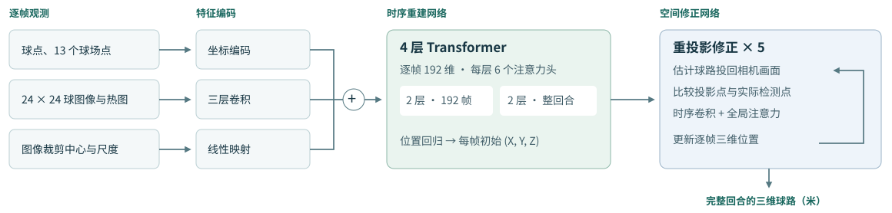
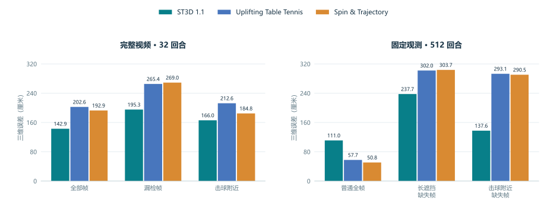
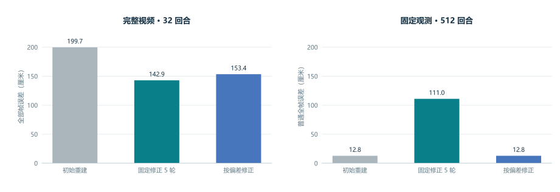

已完成
- 从球点识别、球场标定到整回合三维重建。
- 用同一版算法复算完整视频与固定观测两组对照。
ST3D 1.1 · 研究汇报
ST3D: Monocular 3D Shuttlecock Trajectory Reconstruction with Appearance and Temporal Cues
从一台相机的比赛录像中，结合球的位置、局部外观和前后帧，重建整回合的三维球路。
二维检测使用作者公开的 TrackNetV3 权重。 它从比赛画面中给出候选球点。ST3D 再根据前后帧的飞行方向关联候选点，回到原图核对球心，减少把球拍反光等亮点误当成球的情况。
ST3D 的主要研究贡献是整回合三维重建。 项目的 260 万条仿真轨迹用于预训练我们自己的三维主网络。它融合二维位置、局部外观和前后帧，估计遮挡及漏检时的三维球路，再用重投影偏差修正轨迹。
我们用 7 个比赛目录的 28 段实拍视频微调 1,728 步。第 576 步的开发集原始热图 F1 最好，从 98.11% 升到 98.13%，约提高 0.02 个百分点。完整二维前端验证后，ST3D 1.2 保留了官方检测权重。

| 训练阶段 | 轨迹规模 | 训练轮次 | 更新步数 |
|---|---|---|---|
| 从随机权重预训练 | 260 万条 | 17 | 690,625 |
| 整回合时序适配 | 10 万条 | 6 | 300,000 |
| 全网络微调 | 同一组 10 万条 | 1 | 50,000 |
前两层处理局部窗口，后两层汇集整回合观测。预训练用时包括渲染、训练、保存和验证。
四个阶段分别绘制。横轴为各阶段的轮次或更新步数；点击图可放大。
下载原始曲线数据。“验证误差”和“训练损失”记录 1.1 与 1.2 共用权重的训练过程。1.2 另加击球感知的轨迹平滑，本页仿真回放与对照表采用 1.1。
01 / 仿真与基线
主网络的 4 个机位各展示一条独立测试球路。修正网络另用 2 段完整视频，可在同一时刻切换初值和五轮结果。6 条球路均按原始相机逐帧核对，全程在画内。
主网络输入沿用训练时的局部灰度图、热图、二维球点与场地坐标，4 条轨迹来自留出的测试集。修正网络的 2 条轨迹来自下方的 32 回合视频测试集，在实拍静态背景上合成羽毛球，再运行正式检测与重建流程。演示按机位、输入可用性和画内覆盖选取；下方对照图统计完整测试集。
| 测试集 | 样本规模 | 比较内容 |
|---|---|---|
| 完整仿真视频 | 32 个回合，8,708 帧 | 从共享的新版二维检测到整回合重建 |
| 固定球点与局部图像 | 512 个回合，每回合 2 个机位 | 在相同观测和缺失位置上复核重建误差 |

| 方法 | 全部帧 | 漏检帧 | 击球附近 |
|---|---|---|---|
| ST3D 1.1 | 142.9 | 195.3 | 166.0 |
| Uplifting Table Tennis | 202.6 | 265.4 | 212.6 |
| Spin & Trajectory | 192.9 | 269.0 | 184.8 |
| 方法 | 普通全帧 | 长遮挡缺失帧 | 击球附近缺失帧 |
|---|---|---|---|
| ST3D 1.1 | 111.0 | 237.7 | 137.6 |
| Uplifting Table Tennis | 57.7 | 302.0 | 293.1 |
| Spin & Trajectory | 50.8 | 303.7 | 290.5 |
完整视频的“漏检帧”按实际检测掩码统计，“击球附近”取触球前后各 3 帧。固定观测测试使用普通、连续 120 帧遮挡、击球附近 30 帧缺失三种条件，后两列分别统计相应的缺失帧。
两个官方网络都使用在羽毛球任务上训练的权重，训练规模为 131,072 条轨迹、34 轮。ST3D 另使用局部图像、相机几何和更大规模的预训练。
Uplifting 官方代码 · Spin & Trajectory 官方代码完整视频中，ST3D 的全部帧平均误差为 142.9 厘米，两个对照为 202.6 和 192.9 厘米。在固定观测的普通帧上，两个对照误差更低；长遮挡和击球缺失帧上，ST3D 误差更低。
02 / 真实视频
在同一组 28 段实拍回合上，与项目先前的二维前端相比，改进跟踪后的异常标记从 173 次降至 38 次，大幅跳点从 62 次降至 3 次。两项指标衡量球点在画面中能否被连续、稳定地跟踪。可回放广州、福州、马来西亚和巴塞尔四场比赛。青线标出球场，虚线标出网顶；右侧为单目三维估计。
每段比赛先对完整回合推理，再选取能看清双方回击的连续片段。二维定位误差按选段中有检测和可见球心标注的帧计算，统一折算至 1280 像素宽。实际高度与深度仍待独立测量。
比赛录像来源03 / 研究进展与下一步

固定观测的普通帧初始误差为 12.8 厘米，五轮修正后升到 111.0 厘米。完整视频恰好相反，修正使误差从 199.7 降至 142.9 厘米。
另一种方案用 128 个开发回合选出 8 像素的门槛，初始投影偏差小时保留初值。它把固定观测普通帧误差降回 12.8 厘米，却使完整视频误差升至 153.4 厘米。视频回放采用固定五轮修正。
| 研究方向 | 已有 | 正在研究 |
|---|---|---|
| 局部外观与运动拖影 | 在 256 个独立仿真回合上，加入局部图像后，整回合模型的缺失帧综合误差比坐标版低 7.3%。 | 固定二维球点，分别改变拖影方向与曝光时间，检验哪些图像线索能改善真实球路的深度估计。 |
| 跨遮挡的整回合时序建模 | 早期仿真对照中，整回合模型的缺失帧综合误差比 48 帧窗口低 10.2%，比 192 帧窗口高 2.0%。 | 按遮挡时长和距击球的时间分组，在相同输入下检验哪些帧受益于跨拍信息。 |
| 重投影与自适应修正 | 同一修正器可迭代五轮，利用二维投影偏差更新三维位置。已测试按初始偏差跳过修正的方案；固定五轮在初值较准时仍可能放大误差。 | 根据观测可靠性调整修正方向、幅度和停止轮次，验证能否兼顾漏检帧和初值较准的帧。 |
| 实拍跟踪与真实三维验证 | 跨帧关联和原图复核已在 28 段实拍中对照。大幅跳点从 62 次降至 3 次，衡量的是二维跟踪稳定性。 | 建立同步标定的多机位实拍测试集。仅用单台相机推理，以其余视角核对三维位置、沿视线的深度误差和参考帧覆盖率。 |
| 基线对照与收益归因 | 已运行官方开源方法的羽毛球适配、早期同预算对照，以及提供额外击球信息的 MonoTrack 条件对照。 | 在同一批回合上对齐当前版本、训练预算与输入信息，分别估计网络设计和额外训练数据的贡献。 |